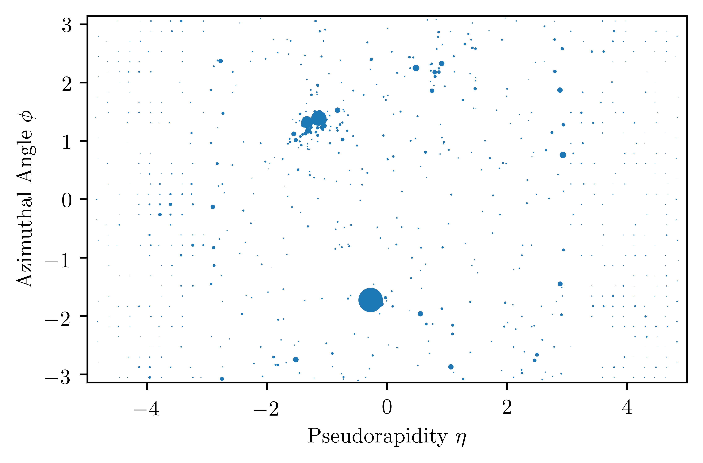

CMS Open Data
In a historic move, the CMS collaboration publicly released terabytes of their LHC data, available on the CERN Open Data Portal. Now anyone can play around with real collider data just a few years after it is collected. This is an amazing step by CMS, guaranteeing that data produced now will be valuable into the far future.
Here, I’d like to explore that data. Using open data in our recent work has been exciting, educational, and frustrating. I hope to share some of that with you here. This isn’t a tutorial, but rather a brief tour. To peer into the open data, you’d typically need to install the CERN virtual machine or the recently-released docker image and use the CMS software framework.
Let’s take a short cut and dive directly into the data.
We’ll do this using the uproot python package, which can be easily installed with pip install uproot.
Looking at Collisions
Downloading the Data
The Open Data Portal has links to many different datasets. Here we’ll focus on the Jet Primary Dataset. This dataset contains events with energetic jets of particles. We’ll see some jets in a moment.
The data are stored in “Analysis Object Data” (AOD) files. The files have thousands of events each and contain a huge amount of information about every event. There are almost 5TB of data, so let’s keep it simple and focus on one file.
Download an AOD file by clicking the link below. Warning: 1GB file size.
04913DA0-8B3F-E311-924F-0025901AD38A.root
Reading the Files
Let’s see the particles in an event. We’ll use the CMS-constructed “particle flow candidates” (PFCs) as proxies for the particles that hit the detector.
Let’s write a few lines of python to read in the particles from this file.
import uproot
# load in the specified file with uproot
file = uproot.open('04913DA0-8B3F-E311-924F-0025901AD38A.root')
events = file[b'Events;1']
# read particle transverse momenta (pts), pseudorapidity (eta), and azimuth (phi)
PFCkey = b'recoPFCandidates_particleFlow__RECO.obj'
pts = events[PFCkey + b'.pt_'].array()
etas = events[PFCkey + b'.eta_'].array()
phis = events[PFCkey + b'.phi_'].array()
The particles are characterized by their energy and direction. Their energy is quantified by the transverse momentum $p_T$ and their direction is specified by the pseudorapidity-azimuth $(\eta,\phi)$ coordinates of the detector cylinder.
Displaying the Events
Now let’s pick an event (#6457) and actually view it with the following code.
import numpy as np
import matplotlib.pyplot as plt
# choose an event
ind = 6457
# plot the collision event of interest
plt.scatter(etas[ind], phis[ind], s=pts[ind], lw=0)
# plot settings
plt.xlim(-5, 5)
plt.ylim(-np.pi, np.pi)
plt.xlabel('Pseudorapidity $\eta$')
plt.ylabel('Azimuthal Angle $\phi$')
plt.show()
This code produces an “unrolled” image of the detector cylinder ($\phi$ is periodic). The event is shown below, depicting higher energy particles as larger dots.

And that’s it! You’re looking at the particles produced by a real LHC collision and recorded by the CMS detector.
What do you see?
There are two energetic sprays of particles (called jets) that are back-to-back with $\Delta\phi \approx \pi$. These jets arise from high-energy quarks and gluons, which fragment and hadronize into jets before hitting the detector.
The AOD file also has information about these jets (and much more!).
Looking closer, we see that the upper jet consists of two energetic prongs. This is an example of jet substructure. A lot of recent work has gone into theoretically understanding and experimentally measuring the substructure of jets at the LHC. More on that later.
Feel free to play around and look at different events! See if you can plot different particle types (photons, electrons, hadrons, etc.) as different colors.
Beware: Staring at too many event displays may drive you mad. Use caution.
Now what?
Digging into Details
See any evidence for new physics in the event above? Me neither.
More serious analyses with open data require more work. First, what event are we even looking at? If you trust my painstaking byte-by-byte extraction, this code finds the event, run, and luminosity section numbers of an event in this dataset.
import struct
# get the auxiliary event information
aux = events[b'EventAuxiliary'].array(uproot.asdebug)
# get the event, run, and lumiblock numbers from the file bytes
event_num = struct.unpack(">I", bytes(aux[ind][43:47]))[0]
run_num = struct.unpack(">I", bytes(aux[ind][35:39]))[0]
lumi_num = struct.unpack(">I", bytes(aux[ind][39:43]))[0]
We are looking at Event 40076805 in Run 166429 and Luminosity Section 54. This fully specifies the event: it was recorded on Friday, June 3, 2011 at 5:04pm. The official CMS list tells us that this event is considered “valid” by CMS, with the detector operating as expected. You can find the the time, luminosity, and other information about the event’s luminosity block once you have these numbers.
The Bad News
You can’t always avoid using the CMS software framework, at least for now. There are event and particle properties that require going the traditional route to extract. Here are some examples.
- Triggers: What trigger(s) fired for this event to be stored?
- Vertexing: Which charged particles are from pileup interactions?
- Jet Corrections: How much of a jet’s energy did the detector collect?
While not every usage of the open data will require all of this information, probing the substructure of jets relies heavily on it.
The Good News
We’ve done all this hard work for you in our paper! We store all the particles within high energy jets from this dataset, making use of this additional information to mitigate pileup and detector effects.
We publicly released the processed data, plus we did cool physics with it! I hope that this dataset is broadly useful for anyone who wants to study jet substructure in the CMS Open Data.
To learn more, check out this demo that runs right in your browser!